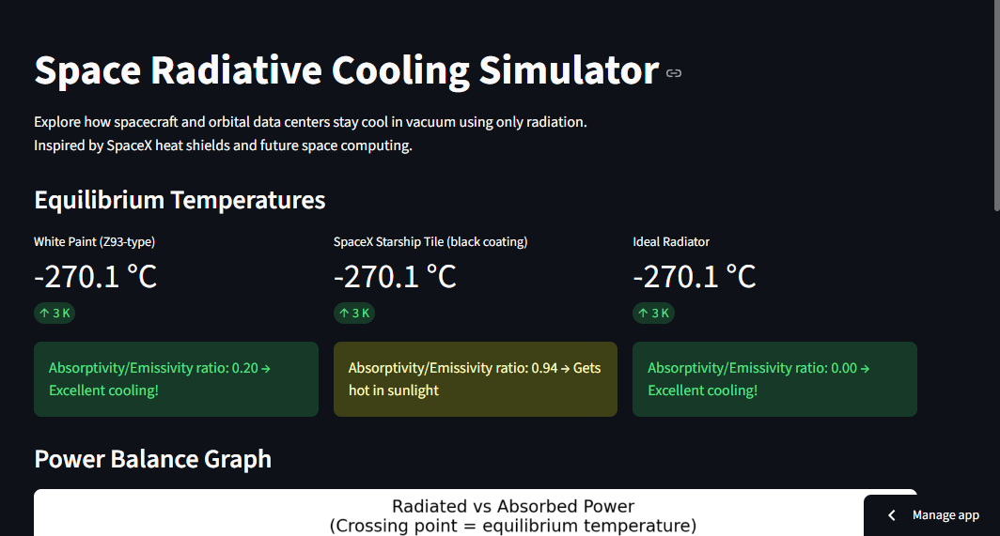
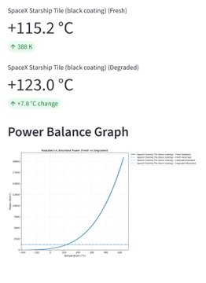

Project Overview
A Python-based simulator exploring radiative cooling technologies inspired by SpaceX's reusable heat shielding. Focuses on modeling thermal protection systems (TPS) for high-heat environments, with potential applications in orbital data centers for passive heat dissipation in vacuum conditions. Uses NumPy and SciPy for net cooling power calculations, spectral emissivity modeling, and material comparisons.
Simulation Screenshot

Output Graph

Application Popout